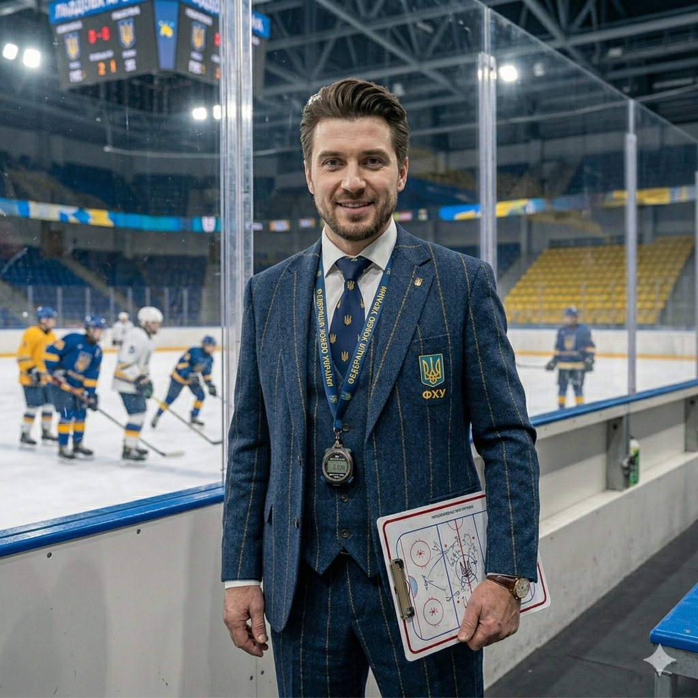
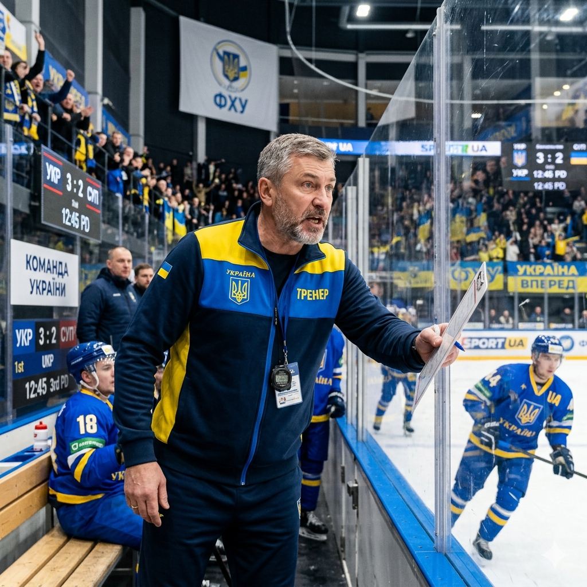
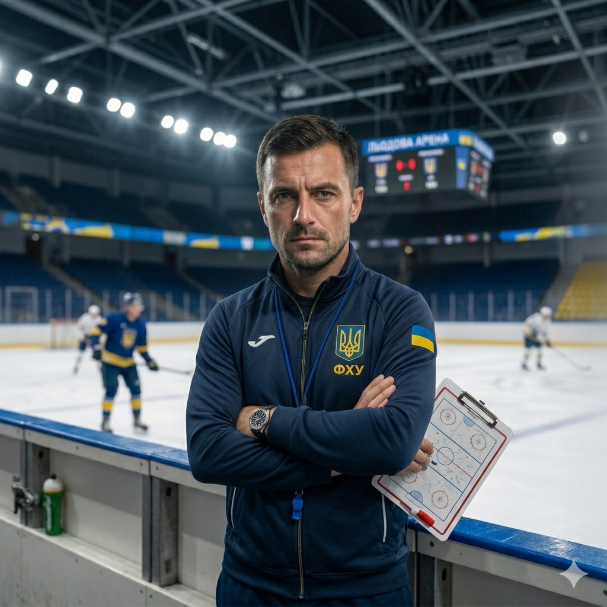
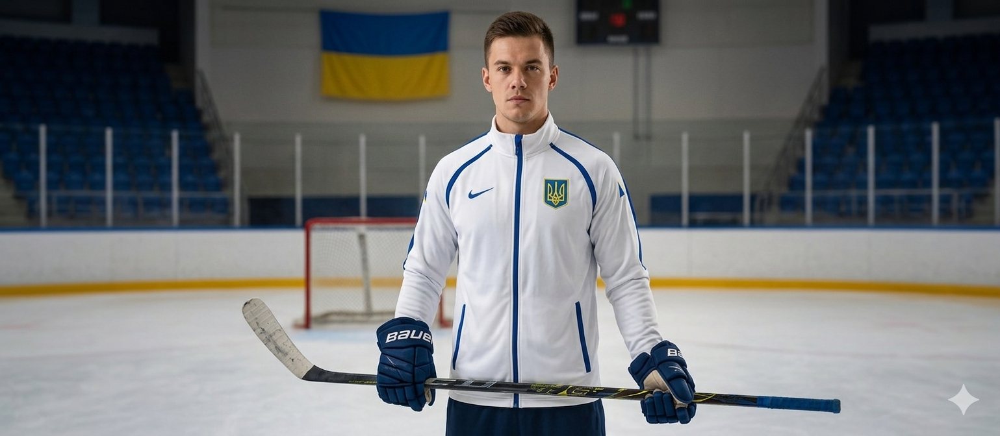
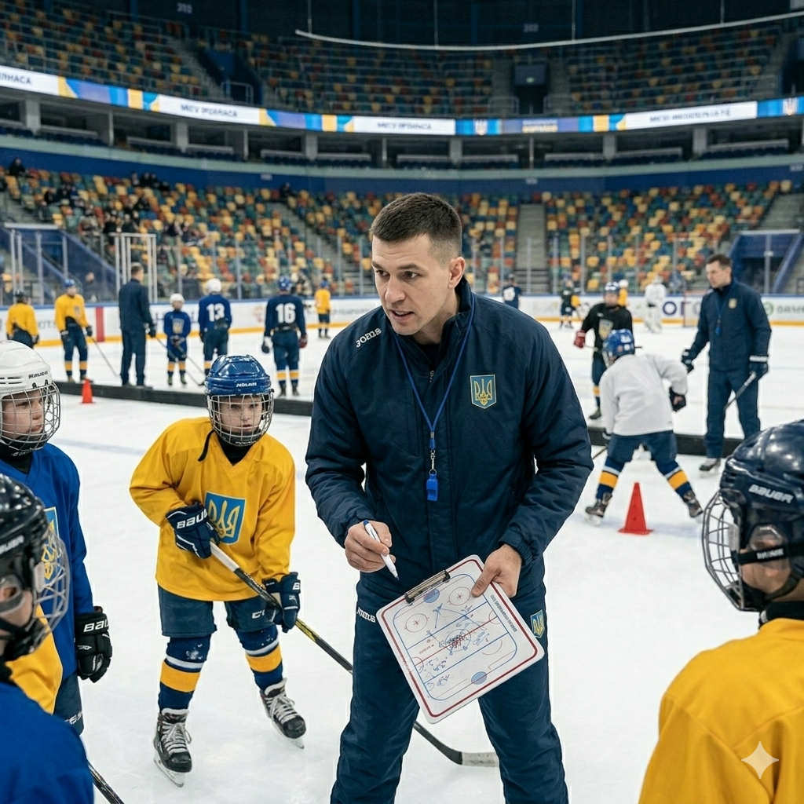

Хокей — один із найпопулярніших та найдинамічніших видів спорту, яким займаються мільйони людей. Сучасні правила зародилися в Канаді 1877 року. Грають на крижаному майданчику 60 на 30 метрів, ворота — на висоті 1,22 м (ширина 1,83 м). Найпрестижніші турніри: Кубок Стенлі в НХЛ та Олімпійські ігри (а також Чемпіонат світу). Найкращі гравці в історії — Грецкі, Лем'є, Кросбі, Макдевід. Матч обслуговують чотири арбітри, діє система відеоповторів. Гра розвиває швидкість, витривалість, мужність і мислення.


Правила Гра триває 60 хвилин (3 періоди по 20 хв чистого часу). Команда має 6 гравців на льоду, заміни — дозволені у будь-який момент матчу. Мета — забити шайбу ключкою у ворота суперника. Руками чи ногами забивати шайбу не можна (дозволено лише зупиняти її). Поза грою (офсайд) — якщо атакуючий гравець перетинає синю лінію зони суперника раніше за саму шайбу. Порушення (підніжка, затримка, удар ключкою) — штраф на 2 або 5 хвилин. За бійку чи грубість гравця вилучають. Кожне вилучення залишає команду в меншості.

Владислав Чех — Хокей. Досвід: 11 років. Спеціалізація: швидкісне катання, маневреність, індивідуальна техніка. Досягнення: тренер вищої категорії, підготував 7 гравців для молодіжної ліги. Про себе: «Вчу тримати баланс на льоду, закладати круті віражі та повністю контролювати шайбу».

Дмитро Козак — Хокей. Досвід: 14 років. Спеціалізація: силові прийоми, командний захист, гра біля бортів. Досягнення: майстер спорту, вивів команду в плей-оф професійного дивізіону. Про себе: «Навчу тримати удар, жорстко захищати свій п'ятак і блокувати будь-які кидки суперника».

Микита Вовк — Хокей. Досвід: 7 років. Спеціалізація: техніка кидка, клацання (слап-шот), реалізація більшості. Досягнення: сертифікований тренер за методикою ліг Канади, екс-нападник. Про себе: «Поставлю потужний і точний кидок, після якого шайба буде залітати у дев'ятку воріт»

Єгор Дорошенко — Хокей. Досвід: 9 років. Спеціалізація: підготовка воротарів, реакція, вибір позиції. Досягнення: кращий тренер воротарів юнацького чемпіонату, розробив власну систему тренувань. Про себе: «Вчу читати гру нападників, миттєво реагувати на рикошети й бути стіною для команди».

Кирило Морозенко — Хокей. Досвід: 4 роки. Спеціалізація: базові навички, координація, робота з юніорами. Досягнення: призер студентської хокейної ліги, засновник аматорської секції. Про себе: «Допоможу впевнено стати на ковзани з нуля, подолати страх льоду та забити першу шайбу».

Павло Медвідь — Хокей. Досвід: 8 років. Спеціалізація: тактика атаки, зіграність ланок, ігрове мислення. Досягнення: диплом академії фізичної культури, вивів дитячу команду в фінал національного кубка. Про себе: «Вчу бачити партнерів наосліп, розігрувати хистрі комбінації та розривати оборону суперника».